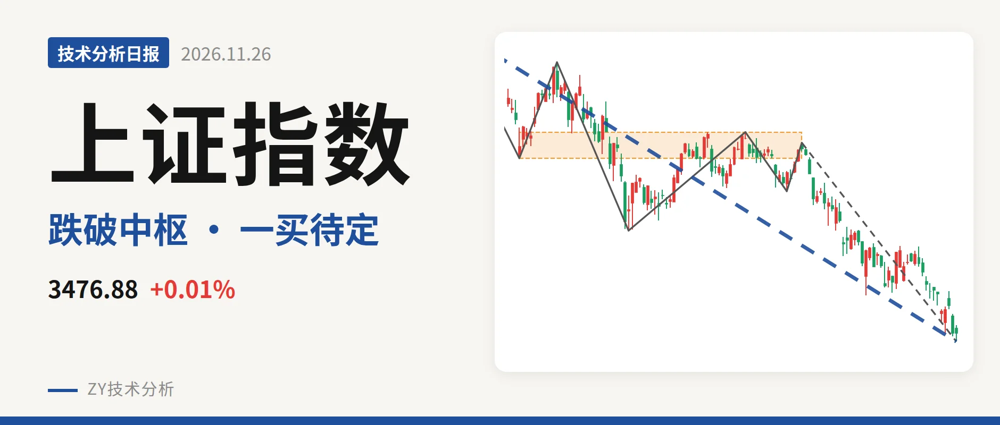
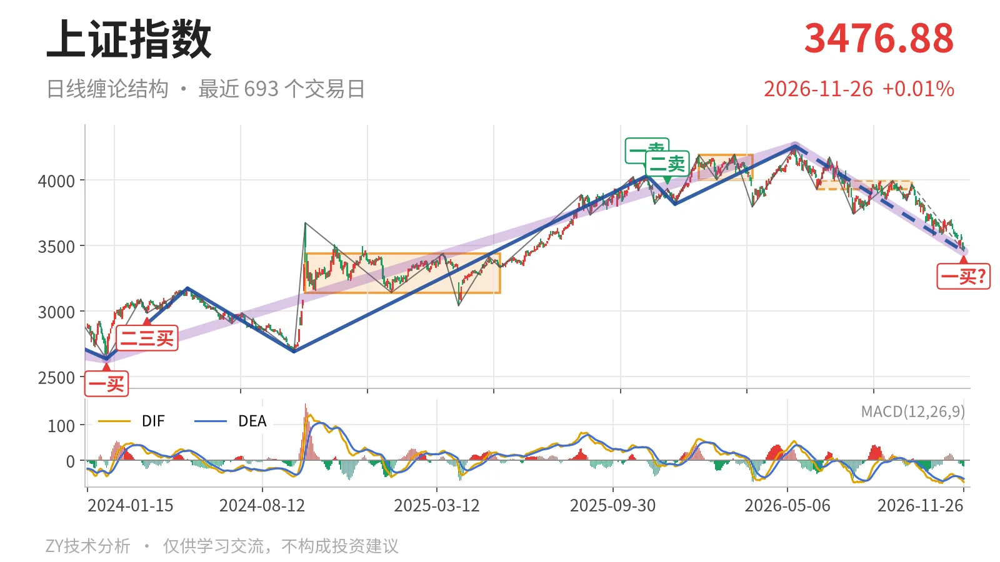
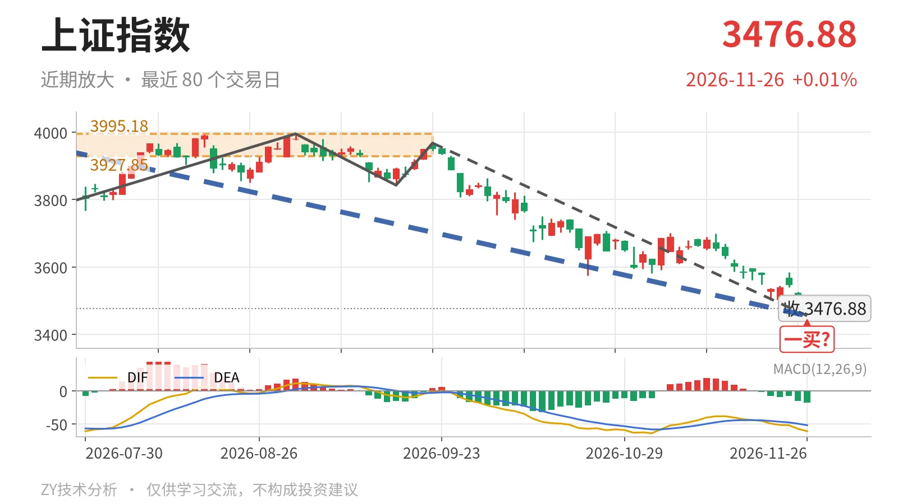

上证指数｜暂定一买3455点，绿柱放大背驰未现

最近日线中枢 3927.85—3995.18点，收盘位于中枢之下
一句话：下跌段未完，暂定一买缺背驰，反抽不过3928点即三卖
📉 走势结构：下跌段还在延续
2024年2月5日至2026年5月14日的上涨走势（2635.09→4258.86点）涨约62%，没有结束。5月14日以来的日线下跌段（4258.86→3455.04点）跌约19%，还在延续，内部已走出7笔。最新收于3476.88点，处于下跌段尾部区域，但下跌段本身没有结束。

📊 中枢与位置：跌破最近中枢，中枢下移
日线最近中枢为6月8日至9月22日中枢（3927.85—3995.18点），中轴3961.51点。最新收盘低于下沿约11.5%，已有效跌破。对比前一个1月14日至3月23日中枢（4002.78—4190.87点），中轴从4097点下移到3962点，中枢下移格局明确。当前价格回到2024年10月8日至2025年5月27日中枢（3140.98—3439.05点）上方，距上沿3439点仅约38点。
🔍 买卖点：暂定的一买，随笔延续而变化
11月26日出现暂定的一买，最低3455.04点，所在下跌笔9月22日至11月26日还在延续。这个一买会随这笔下跌的延续而变化。此前卖点依次为2025年11月14日一卖4034.08点、2025年12月8日二卖3936.31点，一个比一个低，下跌段结构完整。

⚡ 背驰：力度放大背驰未现，一买存疑
比较当前下跌段内两笔同向下跌：6月23日至7月20日的下跌笔，绿柱面积289，DIF低点-61.8；9月22日至11月26日的下跌笔，绿柱面积505，DIF低点-64.0。价格从3741.11点跌到3455.04点创了新低，绿柱面积从289放大到505，DIF从-61.8到-64.0更深。并非新低不新弱，下跌力度在加大而非衰减。暂定的一买缺少背驰配合，可靠性存疑。
🎯 关键位置：反抽3928点定强弱
反抽若回不到3928点上方（最近中枢下沿3927.85点），结构上构成三卖，下跌段将继续。下方3439点附近（前中枢上沿3439.05点）是关键支撑。跌破则进入2024年10月至2025年5月中枢内部，更大级别走势面临考验。再往下，2021年7月至2023年5月线段中枢（3312.72—3418.95点）上沿3419点一线近在咫尺，当前低点距此仅36点。价格远在中枢之下、中枢下移、下跌笔力度放大且无背驰，结构偏弱。若后续下跌笔被破坏并出现明确背驰，一买才有望确认。
⚠️ 本文为基于公开行情数据的缠论技术结构记录，由程序自动计算并生成，仅供学习交流，不构成任何投资建议。市场有风险，投资需谨慎。